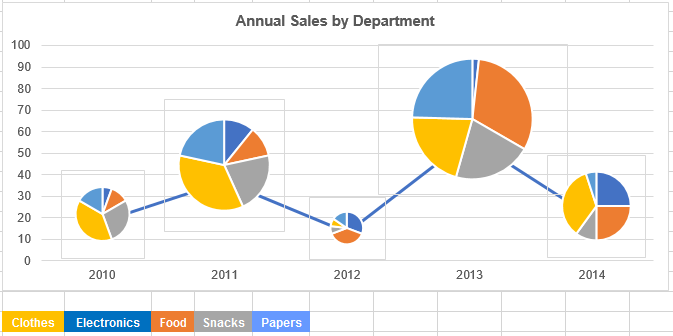
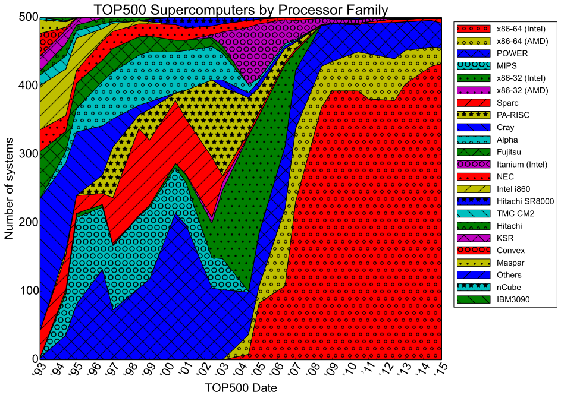
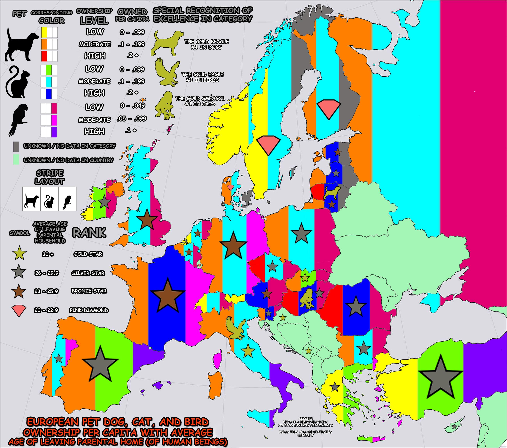
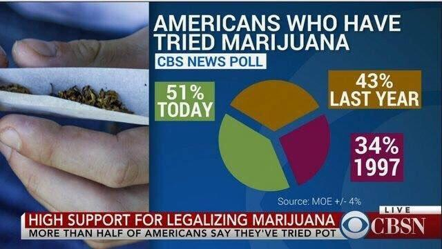
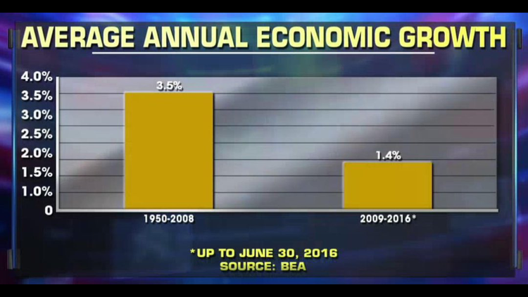
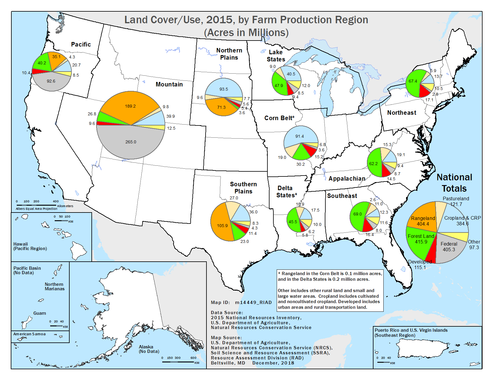

The line graph of pie charts of varying size.

source: Stackoverflow
A 3D stacked scatter-pie-column chart.

source: EagerPies
A stacked area chart with double-encoding… colors and textures, in enough combinations to make your eyes bleed.

source: Wikimedia Processor families in Top500 Supercomputers
{kind=link}
A map of pet ownership in Europe

source: The /r/CrappyDesign subreddit
Time series via pie chart
I agree with the reddit comments here… 100% of people making this chart had to be stoned.

source: The /r/shittyaskscience subreddit
Average annual economic growth

source: https://analythical.com/blog/fox-chart-fail
Why map projections matter (via The West Wing)
Snowfall in Des Moines
{{< tweet 1097357137158828032 >}}
With a remade version that doesn’t have dual axes:
{{< tweet 1098705251434221568 >}}
Pie charts in a map
If you’re thinking about combining a pie chart with anything other than a pie… rethink.

source: https://www.nrcs.usda.gov/Internet/NRCS_RCA/maps/m14449landuse_pies.png
{kind=link}